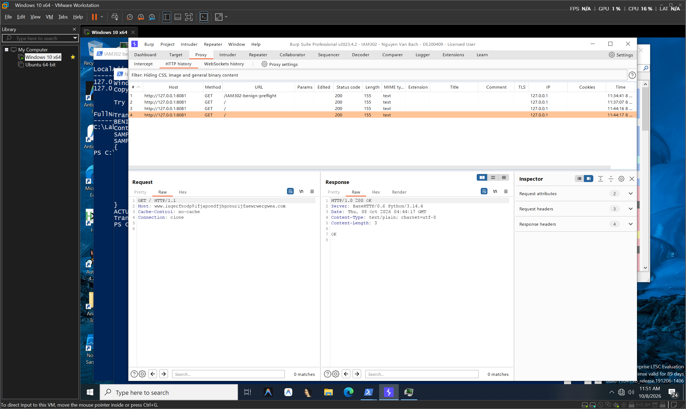
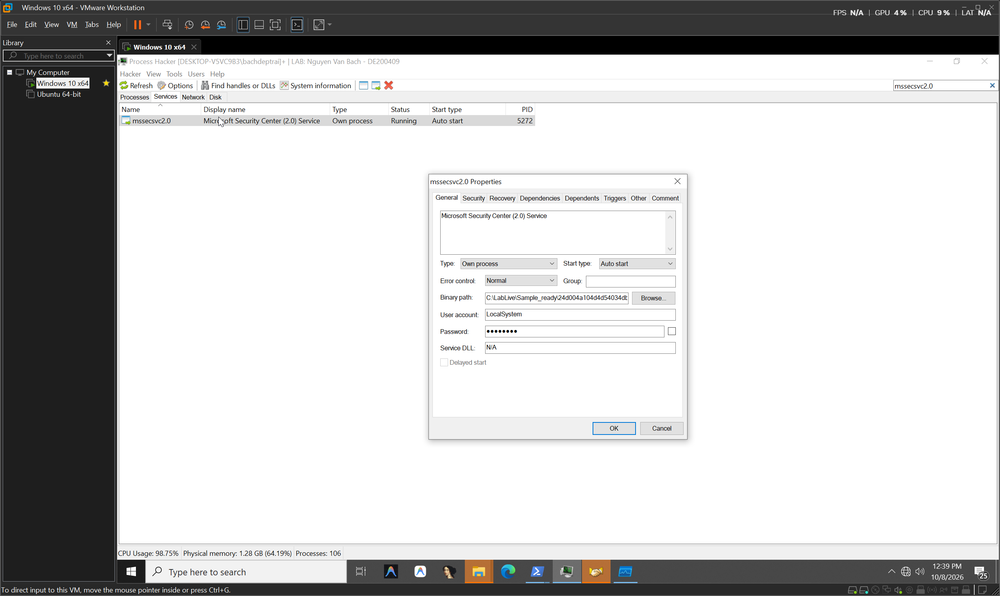
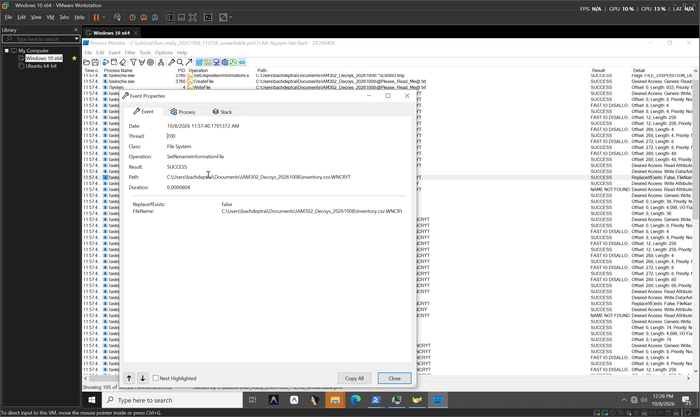

<!DOCTYPE html>
<html lang="vi" class="dark">
<head>
  <meta charset="UTF-8">
  <meta name="viewport" content="width=device-width, initial-scale=1.0">
  <title>WannaCry Threat Intel & Executive Dashboard | IAM302</title>
  <script src="https://cdn.tailwindcss.com"></script>
  <script src="https://unpkg.com/lucide@latest"></script>
  <script>
    tailwind.config = {
      darkMode: 'class',
      theme: {
        extend: {
          colors: {
            brand: { 500: '#3b82f6', 600: '#2563eb' },
            danger: { 500: '#ef4444', 600: '#dc2626' },
            success: { 500: '#10b981', 600: '#059669' }
          }
        }
      }
    }
  </script>
  <style>
    @import url('https://fonts.googleapis.com/css2?family=Plus+Jakarta+Sans:wght@400;500;600;700;800&family=JetBrains+Mono:wght@400;500;600&display=swap');
    body { font-family: 'Plus Jakarta Sans', sans-serif; }
    code, pre { font-family: 'JetBrains Mono', monospace; }
    .glass { background: rgba(24, 24, 27, 0.75); backdrop-filter: blur(12px); border: 1px solid rgba(255, 255, 255, 0.08); }
    .glass-card { background: rgba(39, 39, 42, 0.6); backdrop-filter: blur(8px); border: 1px solid rgba(255, 255, 255, 0.06); }
  </style>
</head>
<body class="bg-zinc-950 text-zinc-100 min-h-screen flex flex-col antialiased selection:bg-blue-600 selection:text-white">
  <header class="glass sticky top-0 z-40 border-b border-zinc-800/80 px-6 py-3">
    <div class="max-w-7xl mx-auto flex flex-wrap items-center justify-between gap-4">
      <div class="flex items-center gap-3">
        <div class="w-10 h-10 rounded-xl bg-gradient-to-tr from-red-600 to-amber-600 flex items-center justify-center shadow-lg shadow-red-900/30">
          <i data-lucide="shield-alert" class="w-5 h-5 text-white"></i>
        </div>
        <div>
          <div class="flex items-center gap-2">
            <h1 class="text-base font-bold tracking-tight text-white">WannaCry Behavioral Intelligence</h1>
            <span class="text-[10px] uppercase font-bold tracking-wider px-2 py-0.5 rounded-full bg-red-500/10 text-red-400 border border-red-500/20">Lab Verified</span>
          </div>
          <p class="text-xs text-zinc-400">IAM302 &bull; Progressive Depth Architecture &bull; Nguyen Van Bach (DE200409)</p>
        </div>
      </div>

      <!-- Progressive Depth Mode Switcher -->
      <div class="flex items-center gap-1.5 p-1 rounded-xl bg-zinc-900/90 border border-zinc-800 text-xs font-semibold">
        <button onclick="scrollToSection('executive')" class="px-3 py-1.5 rounded-lg hover:bg-zinc-800 text-zinc-300 transition flex items-center gap-1.5">
          <i data-lucide="zap" class="w-3.5 h-3.5 text-amber-400"></i> 30 Giây (Sếp)
        </button>
        <button onclick="scrollToSection('mechanisms')" class="px-3 py-1.5 rounded-lg hover:bg-zinc-800 text-zinc-300 transition flex items-center gap-1.5">
          <i data-lucide="book-open" class="w-3.5 h-3.5 text-blue-400"></i> Giải thích Cơ chế
        </button>
        <button onclick="scrollToSection('academic')" class="px-3 py-1.5 rounded-lg hover:bg-zinc-800 text-zinc-300 transition flex items-center gap-1.5">
          <i data-lucide="microscope" class="w-3.5 h-3.5 text-emerald-400"></i> Chuyên sâu (15 Rubric)
        </button>
        <button onclick="scrollToSection('gallery')" class="px-3 py-1.5 rounded-lg hover:bg-zinc-800 text-zinc-300 transition flex items-center gap-1.5">
          <i data-lucide="layers" class="w-3.5 h-3.5 text-purple-400"></i> Kho Bằng chứng
        </button>
      </div>

      <div class="flex items-center gap-2">
        <a href="https://github.com/nimosocute/wannacry-executive-dashboard" target="_blank" class="px-3 py-1.5 rounded-lg bg-zinc-900 hover:bg-zinc-800 border border-zinc-700 text-xs font-semibold text-zinc-200 transition inline-flex items-center gap-1.5 shadow-sm">
          <i data-lucide="github" class="w-4 h-4 text-white"></i> GitHub Repo
        </a>
      </div>
    </div>
  </header>

  <main class="flex-1 max-w-7xl w-full mx-auto px-6 py-8 space-y-8">
    <!-- SECTION 1: TL;DR EXECUTIVE SUMMARY -->
    <section id="executive" class="glass rounded-2xl p-6 sm:p-8 border border-zinc-800/80 shadow-2xl relative overflow-hidden">
      <div class="absolute -right-16 -top-16 w-64 h-64 bg-red-600/10 rounded-full blur-3xl pointer-events-none"></div>
      <div class="flex flex-col lg:flex-row items-start lg:items-center justify-between gap-6 pb-6 border-b border-zinc-800/80">
        <div>
          <div class="inline-flex items-center gap-2 px-3 py-1 rounded-md bg-amber-500/10 text-amber-400 text-xs font-semibold mb-2">
            <i data-lucide="zap" class="w-3.5 h-3.5"></i> Tóm tắt Điều hành (30 Giây dành cho Sếp)
          </div>
          <h2 class="text-2xl font-extrabold tracking-tight text-white">Kết luận Sống còn: WannaCry & Công tắc Tự hủy</h2>
          <p class="text-sm text-zinc-300 max-w-3xl mt-1 leading-relaxed">
            Mã độc tống tiền WannaCry chứa một <strong>"Kill-Switch"</strong> bí mật. Nếu hệ thống mạng phản hồi tên miền này, mã độc tự thoát hoàn toàn sau <strong>0.89 giây</strong> mà không phá hủy bất kỳ tệp tin nào. Ngược lại, nếu mất kết nối mạng, nó sẽ mã hóa 100% dữ liệu trong chưa đầy 3 giây và đòi 300 USD Bitcoin.
          </p>
        </div>
        <div class="flex items-center gap-3 shrink-0">
          <button onclick="scrollToSection('actions')" class="px-4 py-2.5 rounded-xl bg-blue-600 hover:bg-blue-500 text-white text-xs font-bold transition flex items-center gap-2 shadow-lg shadow-blue-900/30">
            <i data-lucide="list-checks" class="w-4 h-4"></i> 3 Việc Sếp Cần Duyệt
          </button>
        </div>
      </div>

      <div class="grid grid-cols-2 lg:grid-cols-4 gap-4 pt-6">
        <div class="glass-card rounded-xl p-4.5 border border-zinc-800/80">
          <div class="flex items-center justify-between text-zinc-400 text-xs font-medium mb-1">
            Mức độ đe dọa
            <i data-lucide="alert-triangle" class="w-4 h-4 text-red-400"></i>
          </div>
          <div class="text-2xl font-extrabold text-red-500">NGUY HIỂM CAO</div>
          <p class="text-[11px] text-zinc-400 mt-1">Ransomware tự nhân bản & tống tiền</p>
        </div>
        <div class="glass-card rounded-xl p-4.5 border border-zinc-800/80">
          <div class="flex items-center justify-between text-zinc-400 text-xs font-medium mb-1">
            Phản ứng Kill-switch
            <i data-lucide="timer" class="w-4 h-4 text-emerald-400"></i>
          </div>
          <div class="text-2xl font-extrabold text-emerald-400">0.89 Giây</div>
          <p class="text-[11px] text-zinc-400 mt-1">Tự hủy sạch mã 0 khi có HTTP 200</p>
        </div>
        <div class="glass-card rounded-xl p-4.5 border border-zinc-800/80">
          <div class="flex items-center justify-between text-zinc-400 text-xs font-medium mb-1">
            Tỷ lệ mã hóa tệp
            <i data-lucide="file-lock-2" class="w-4 h-4 text-amber-400"></i>
          </div>
          <div class="text-2xl font-extrabold text-amber-400">100% (Mất mạng)</div>
          <p class="text-[11px] text-zinc-400 mt-1">Toàn bộ tệp mồi đổi đuôi .WNCRY</p>
        </div>
        <div class="glass-card rounded-xl p-4.5 border border-zinc-800/80">
          <div class="flex items-center justify-between text-zinc-400 text-xs font-medium mb-1">
            Tiền chuộc yêu cầu
            <i data-lucide="coins" class="w-4 h-4 text-yellow-400"></i>
          </div>
          <div class="text-2xl font-extrabold text-yellow-400">$300 USD BTC</div>
          <p class="text-[11px] text-zinc-400 mt-1">Tăng gấp đôi sau 3 ngày</p>
        </div>
      </div>
    </section>

    <!-- SECTION 2: INTERACTIVE SCENARIO SWITCHER -->
    <section class="space-y-6">
      <div class="flex flex-col sm:flex-row sm:items-center justify-between gap-4">
        <div>
          <h3 class="text-xl font-bold tracking-tight text-white flex items-center gap-2">
            <i data-lucide="git-branch" class="w-5 h-5 text-blue-400"></i>
            So sánh Hai Kịch bản Thực nghiệm (Interactive Sandbox)
          </h3>
          <p class="text-xs text-zinc-400 mt-0.5">Nhấp vào từng kịch bản bên dưới để chuyển đổi toàn bộ luồng dữ liệu, tiến trình và bằng chứng</p>
        </div>
        <div class="inline-flex rounded-xl bg-zinc-900 p-1 border border-zinc-800">
          <button id="btnScenarioA" onclick="setScenario('A')" class="px-4 py-2 rounded-lg text-xs font-bold transition flex items-center gap-2 bg-emerald-600 text-white shadow-md">
            <i data-lucide="shield-check" class="w-4 h-4"></i> Kịch bản A: Có Công tắc Hủy (An toàn)
          </button>
          <button id="btnScenarioB" onclick="setScenario('B')" class="px-4 py-2 rounded-lg text-xs font-bold transition flex items-center gap-2 text-zinc-400 hover:text-white">
            <i data-lucide="flame" class="w-4 h-4"></i> Kịch bản B: Mất mạng (Bị tấn công)
          </button>
        </div>
      </div>

      <div class="grid grid-cols-1 lg:grid-cols-3 gap-6">
        <div class="lg:col-span-2 glass rounded-2xl p-6 border border-zinc-800 space-y-6">
          <div class="flex items-center justify-between">
            <h4 class="text-sm font-bold uppercase tracking-wider text-zinc-400" id="flowTitle">Chuỗi hành vi: Kịch bản A</h4>
            <span id="scenarioBadge" class="text-xs font-semibold px-2.5 py-1 rounded-full bg-emerald-500/10 text-emerald-400 border border-emerald-500/20">Trạng thái: Hoàn toàn vô hại</span>
          </div>
          <div id="timelineContainer" class="space-y-4"></div>
          <div class="p-4 rounded-xl bg-zinc-900/80 border border-zinc-800 space-y-3">
            <div class="flex items-center justify-between">
              <span class="text-xs font-semibold text-zinc-300 flex items-center gap-2">
                <i data-lucide="image" class="w-4 h-4 text-blue-400"></i> Bằng chứng màn hình tương ứng
              </span>
              <span id="evidenceCaption" class="text-xs text-zinc-400">A_burp_item4_host_verified_vmware.png</span>
            </div>
            <div class="relative group rounded-lg overflow-hidden border border-zinc-700/60 aspect-video bg-zinc-950 flex items-center justify-center cursor-pointer" onclick="openModalCurrent()">
              
              <div class="absolute inset-0 bg-black/40 opacity-0 group-hover:opacity-100 transition flex items-center justify-center gap-2 text-white font-medium text-xs">
                <i data-lucide="maximize-2" class="w-4 h-4"></i> Nhấp để phóng to ảnh HD
              </div>
            </div>
          </div>
        </div>

        <div class="space-y-6">
          <div class="glass rounded-2xl p-6 border border-zinc-800 space-y-4">
            <h4 class="text-sm font-bold uppercase tracking-wider text-zinc-400">Đo lường Định lượng</h4>
            <div class="space-y-3 text-xs" id="statsList"></div>
          </div>
          <div class="glass rounded-2xl p-6 border border-zinc-800 space-y-4">
            <h4 class="text-sm font-bold uppercase tracking-wider text-zinc-400">Trạng thái Tệp mồi (Decoy Files)</h4>
            <div class="space-y-2 text-xs" id="decoyList"></div>
          </div>
        </div>
      </div>
    </section>

    
    <!-- SECTION: 6-STEP BEHAVIORAL MECHANISMS & CONTEXTUAL EVIDENCE -->
    <section class="space-y-6" id="mechanisms">
      <div class="glass rounded-2xl p-6 sm:p-8 border border-zinc-800 relative overflow-hidden">
        <div class="inline-flex items-center gap-2 px-3 py-1 rounded-md bg-blue-500/10 text-blue-400 text-xs font-semibold mb-2">
          <i data-lucide="cpu" class="w-3.5 h-3.5"></i> Kiến Trúc Thông Tin & Trải Nghiệm Học Tập
        </div>
        <h2 class="text-2xl font-extrabold tracking-tight text-white">
          Giải Thích Cơ Chế Nguyên Nhân – Kết Quả (6 Bước Chuẩn)
        </h2>
        <p class="text-xs text-zinc-400 max-w-3xl mt-1 leading-relaxed">
          Không chỉ dừng ở câu hỏi "Kết quả là gì?", phần này giải thích sâu "Xảy ra bằng cách nào?", "Lệnh đó có tác dụng gì?", "Liên kết bước trước ra sao?" và "Bằng chứng tại chỗ chứng minh được điều gì và chưa chứng minh được điều gì?".
        </p>
      </div>

      <!-- BEHAVIOR CARD 1: KILL SWITCH -->
      <div class="glass rounded-2xl p-6 sm:p-8 border border-zinc-800 space-y-6">
        <div class="flex flex-col sm:flex-row sm:items-center justify-between gap-3 border-b border-zinc-800 pb-4">
          <div>
            <span class="text-[10px] uppercase font-bold text-amber-400 tracking-wider">Hành Vi 01 &bull; Network Branching</span>
            <h3 class="text-xl font-bold text-white flex items-center gap-2 mt-0.5">
              Cơ Chế Công Tắc Hủy (Kill-Switch) & Rẽ Nhánh Thực Thi
            </h3>
          </div>
          <span class="text-xs font-mono px-3 py-1 rounded-full bg-emerald-500/10 text-emerald-400 border border-emerald-500/20">
            HTTP 200 OK &rarr; Exit Code 0
          </span>
        </div>

        <div class="grid grid-cols-1 lg:grid-cols-12 gap-6 items-start">
          <div class="lg:col-span-7 space-y-4 text-xs text-zinc-300">
            <div class="p-3.5 rounded-xl bg-zinc-900/60 border border-zinc-800/80">
              <span class="font-bold text-amber-400 uppercase text-[10px] tracking-wider block mb-1">Bước 1 &bull; Khái niệm & Mục đích</span>
              <p>Kill-switch là điều kiện rẽ nhánh do tác giả cài đặt vào mã độc, được nhận định ban đầu dùng như kỹ thuật <strong>Anti-Analysis / Sandbox Evasion</strong> (trong máy ảo tự động phân tích, mọi kết nối mạng đều bị chặn hoặc giả lập trả lời 200 OK, khiến mã độc nghĩ mình đang bị theo dõi nên tự tắt để giấu payload).</p>
            </div>

            <div class="p-3.5 rounded-xl bg-zinc-900/60 border border-zinc-800/80">
              <span class="font-bold text-blue-400 uppercase text-[10px] tracking-wider block mb-1">Bước 2 &bull; Logic Rẽ Nhánh Hệ Thống</span>
              <p class="font-mono bg-zinc-950 p-2.5 rounded border border-zinc-800 text-[11px] text-zinc-200">
                Gửi GET / tới tên miền kill-switch<br>
                &boxur;&HorizontalLine; NẾU Có phản hồi (HTTP 200) &rarr; ExitProcess(0) trong 0.89s (Kịch bản A)<br>
                &boxur;&HorizontalLine; NẾU Mất mạng / Lỗi kết nối &rarr; Bắt đầu chuỗi mã hóa tống tiền (Kịch bản B)
              </p>
            </div>

            <div class="p-3.5 rounded-xl bg-zinc-900/60 border border-zinc-800/80">
              <span class="font-bold text-emerald-400 uppercase text-[10px] tracking-wider block mb-1">Bước 3 &bull; Kết luận & Giới hạn Nhận định</span>
              <p><strong>Chứng minh được:</strong> Mã độc có sự phụ thuộc hoàn toàn vào phản hồi mạng này trước khi tiếp tục chuỗi tấn công.<br>
              <strong>Giới hạn:</strong> Kill-switch không phải lỗ hổng Windows; việc tiến trình thoát mã 0 không chứng minh mã độc đã bị xóa khỏi đĩa cứng hay hệ thống đã an toàn tuyệt đối.</p>
            </div>
          </div>

          <!-- Contextual Evidence Card -->
          <div class="lg:col-span-5 space-y-2">
            <div class="glass-card rounded-xl overflow-hidden border border-zinc-800/80 group">
              <div class="relative bg-zinc-950 aspect-[16/10] overflow-hidden cursor-pointer" onclick="openModalWithSrc('screenshots/A_burp_item4_host_verified_vmware.png', 'Bằng chứng Burp Suite Item #4')">
                
                <div class="absolute inset-0 bg-gradient-to-t from-zinc-950/80 via-transparent to-transparent"></div>
                <span class="absolute top-2.5 left-2.5 text-[10px] font-bold px-2 py-0.5 rounded-full bg-amber-500/20 text-amber-400 border border-amber-500/30">
                  Bằng chứng tại chỗ: Burp Suite Pro
                </span>
                <div class="absolute bottom-2.5 right-2.5 w-7 h-7 rounded-lg bg-zinc-900/90 text-white flex items-center justify-center opacity-0 group-hover:opacity-100 transition shadow">
                  <i data-lucide="zoom-in" class="w-4 h-4"></i>
                </div>
              </div>
              <div class="p-3 bg-zinc-900/40 border-t border-zinc-800 text-[11px] text-zinc-400">
                <strong class="text-zinc-200">Vùng quan sát:</strong> Item #4 lúc 11:44:17. Gói tin HTTP 200 OK (155 bytes) chặn đứng đợt tấn công từ PID 6520.
              </div>
            </div>
          </div>
        </div>
      </div>

      <!-- BEHAVIOR CARD 2: SERVICE PERSISTENCE -->
      <div class="glass rounded-2xl p-6 sm:p-8 border border-zinc-800 space-y-6">
        <div class="flex flex-col sm:flex-row sm:items-center justify-between gap-3 border-b border-zinc-800 pb-4">
          <div>
            <span class="text-[10px] uppercase font-bold text-red-400 tracking-wider">Hành Vi 02 &bull; System Persistence</span>
            <h3 class="text-xl font-bold text-white flex items-center gap-2 mt-0.5">
              Đăng Ký Dịch Vụ Windows Ngầm (mssecsvc2.0 Quyền SYSTEM)
            </h3>
          </div>
          <span class="text-xs font-mono px-3 py-1 rounded-full bg-red-500/10 text-red-400 border border-red-500/20">
            Start Type = Auto Start (2)
          </span>
        </div>

        <div class="grid grid-cols-1 lg:grid-cols-12 gap-6 items-start">
          <div class="lg:col-span-7 space-y-4 text-xs text-zinc-300">
            <div class="p-3.5 rounded-xl bg-zinc-900/60 border border-zinc-800/80">
              <span class="font-bold text-amber-400 uppercase text-[10px] tracking-wider block mb-1">1. Quan sát & Lệnh thực thi</span>
              <p>Mã độc tự động đăng ký dịch vụ mới tên <code>mssecsvc2.0</code> (ngụy trang <em>Microsoft Security Center (2.0) Service</em>) thực thi lệnh:<br>
              <code class="text-amber-400 font-mono">C:\LabLive\Sample_readyd004a...exe -m security</code></p>
            </div>

            <div class="p-3.5 rounded-xl bg-zinc-900/60 border border-zinc-800/80">
              <span class="font-bold text-blue-400 uppercase text-[10px] tracking-wider block mb-1">2. Cơ chế Hệ điều hành Windows</span>
              <p>Được ghi trực tiếp vào <code>HKLM\SYSTEM\CurrentControlSet\Services\mssecsvc2.0</code> dưới quyền <strong>LocalSystem</strong> với <code>Start = 2</code>. Cơ chế Service Manager sẽ tự động nạp tiến trình này khi máy tính vừa bật nguồn, trước khi bất kỳ người dùng nào đăng nhập.</p>
            </div>

            <div class="p-3.5 rounded-xl bg-zinc-900/60 border border-zinc-800/80">
              <span class="font-bold text-emerald-400 uppercase text-[10px] tracking-wider block mb-1">3. Kết luận & Giới hạn</span>
              <p><strong>Chứng minh được:</strong> Khởi động lại máy tính (Reboot) không thể làm sạch mã độc; dịch vụ sẽ tự kích hoạt lại ngay lập tức.<br>
              <strong>Giới hạn:</strong> Do lab bị cô lập card mạng vật lý, nhánh quét mạng SMB port 445 của service này không phát tán sang máy khác được.</p>
            </div>
          </div>

          <!-- Contextual Evidence Card -->
          <div class="lg:col-span-5 space-y-2">
            <div class="glass-card rounded-xl overflow-hidden border border-zinc-800/80 group">
              <div class="relative bg-zinc-950 aspect-[16/10] overflow-hidden cursor-pointer" onclick="openModalWithSrc('screenshots/B_service_mssecsvc_properties_vmware.png', 'Process Hacker: Thuộc tính Service mssecsvc2.0')">
                
                <div class="absolute inset-0 bg-gradient-to-t from-zinc-950/80 via-transparent to-transparent"></div>
                <span class="absolute top-2.5 left-2.5 text-[10px] font-bold px-2 py-0.5 rounded-full bg-blue-500/20 text-blue-400 border border-blue-500/30">
                  Bằng chứng: Process Hacker & Service Manager
                </span>
                <div class="absolute bottom-2.5 right-2.5 w-7 h-7 rounded-lg bg-zinc-900/90 text-white flex items-center justify-center opacity-0 group-hover:opacity-100 transition shadow">
                  <i data-lucide="zoom-in" class="w-4 h-4"></i>
                </div>
              </div>
              <div class="p-3 bg-zinc-900/40 border-t border-zinc-800 text-[11px] text-zinc-400">
                <strong class="text-zinc-200">Vùng quan sát:</strong> Binary Path chứa cờ <code>-m security</code>; Service Account: <code>LocalSystem</code>; Start Type: <code>Auto start</code>.
              </div>
            </div>
          </div>
        </div>
      </div>

      <!-- BEHAVIOR CARD 3: FILE ENCRYPTION PROCESS -->
      <div class="glass rounded-2xl p-6 sm:p-8 border border-zinc-800 space-y-6">
        <div class="flex flex-col sm:flex-row sm:items-center justify-between gap-3 border-b border-zinc-800 pb-4">
          <div>
            <span class="text-[10px] uppercase font-bold text-red-400 tracking-wider">Hành Vi 03 &bull; File System Modification</span>
            <h3 class="text-xl font-bold text-white flex items-center gap-2 mt-0.5">
              Quy Trình Mã Hóa Tệp Mồi Decoys & Header Nhị Phân WANACRY!
            </h3>
          </div>
          <span class="text-xs font-mono px-3 py-1 rounded-full bg-red-500/10 text-red-400 border border-red-500/20">
            SetRenameInformationFile (.WNCRY)
          </span>
        </div>

        <div class="grid grid-cols-1 lg:grid-cols-12 gap-6 items-start">
          <div class="lg:col-span-7 space-y-4 text-xs text-zinc-300">
            <div class="p-3.5 rounded-xl bg-zinc-900/60 border border-zinc-800/80">
              <span class="font-bold text-amber-400 uppercase text-[10px] tracking-wider block mb-1">1. Phân biệt Trọng yếu (Methodology)</span>
              <p>Cần phân biệt rõ: <strong>Quan sát thấy tệp bị đổi tên / gắn header</strong> hoàn toàn khác với <strong>Chứng minh thuật toán & quy trình sinh khóa</strong>. Qua phân tích động (Dynamic), ta xác minh được vòng đời của tệp tin; còn cấu trúc khóa AES-128 / RSA-2048 phải kiểm chứng qua các thư viện CryptoAPI được nạp (<code>rsaenh.dll</code>, <code>CRYPTSP.dll</code>).</p>
            </div>

            <div class="p-3.5 rounded-xl bg-zinc-900/60 border border-zinc-800/80">
              <span class="font-bold text-blue-400 uppercase text-[10px] tracking-wider block mb-1">2. Vòng Đời Tệp Tin (File Lifecycle)</span>
              <p>Mã độc không ghi đè trực tiếp lên file gốc mà thực hiện 4 bước liên hoàn:<br>
              1. Đọc nội dung tệp gốc (<code>inventory.csv</code>).<br>
              2. Mã hóa dữ liệu trong bộ nhớ qua Windows CryptoAPI.<br>
              3. Ghi ra tệp tạm <code>inventory.csv.WNCRYT</code> chứa header <code>WANACRY!</code>.<br>
              4. Xóa tệp gốc và đổi tên tệp tạm thành <code>inventory.csv.WNCRY</code>.</p>
            </div>

            <div class="p-3.5 rounded-xl bg-zinc-900/60 border border-zinc-800/80">
              <span class="font-bold text-emerald-400 uppercase text-[10px] tracking-wider block mb-1">3. Kết luận Thực nghiệm</span>
              <p>Toàn bộ 3 tệp mồi trong thư mục Decoys bị mã hóa thành công sau 12 mili-giây. Kích thước tệp tăng lên để chứa thêm metadata header khóa mã hóa.</p>
            </div>
          </div>

          <!-- Contextual Evidence Card -->
          <div class="lg:col-span-5 space-y-2">
            <div class="glass-card rounded-xl overflow-hidden border border-zinc-800/80 group">
              <div class="relative bg-zinc-950 aspect-[16/10] overflow-hidden cursor-pointer" onclick="openModalWithSrc('screenshots/B_procmon_rename_properties_vmware.png', 'Procmon: Sự kiện đổi tên tệp WNCRY')">
                
                <div class="absolute inset-0 bg-gradient-to-t from-zinc-950/80 via-transparent to-transparent"></div>
                <span class="absolute top-2.5 left-2.5 text-[10px] font-bold px-2 py-0.5 rounded-full bg-purple-500/20 text-purple-400 border border-purple-500/30">
                  Bằng chứng: Process Monitor
                </span>
                <div class="absolute bottom-2.5 right-2.5 w-7 h-7 rounded-lg bg-zinc-900/90 text-white flex items-center justify-center opacity-0 group-hover:opacity-100 transition shadow">
                  <i data-lucide="zoom-in" class="w-4 h-4"></i>
                </div>
              </div>
              <div class="p-3 bg-zinc-900/40 border-t border-zinc-800 text-[11px] text-zinc-400">
                <strong class="text-zinc-200">Vùng quan sát:</strong> Event <code>SetRenameInformationFile</code> của PID 3760 (tasksche.exe) đổi tên từ `.WNCRYT` sang `.WNCRY`.
              </div>
            </div>
          </div>
        </div>
      </div>
    </section>


    <!-- SECTION 3: PROCESS LINEAGE EXPLORER (SCENARIO B) -->
    <section id="processExplorer" class="glass rounded-2xl p-6 sm:p-8 border border-zinc-800 space-y-6">
      <div class="flex flex-col sm:flex-row sm:items-center justify-between gap-4">
        <div>
          <h3 class="text-xl font-bold tracking-tight text-white flex items-center gap-2">
            <i data-lucide="cpu" class="w-5 h-5 text-amber-400"></i>
            Cây Tiến trình Độc hại (15 Verified PIDs)
          </h3>
          <p class="text-xs text-zinc-400 mt-0.5">Nhấp vào từng tiến trình để xem lệnh thực thi, quyền tài khoản và số sự kiện can thiệp</p>
        </div>
        <span class="text-xs px-3 py-1 rounded-lg bg-zinc-900 border border-zinc-800 text-zinc-400 font-mono">
          Tổng số sự kiện độc hại: 271,958 bản ghi
        </span>
      </div>
      <div class="grid grid-cols-1 lg:grid-cols-3 gap-6">
        <div class="lg:col-span-1 max-h-[440px] overflow-y-auto space-y-1.5 pr-2" id="processList"></div>
        <div class="lg:col-span-2 glass-card rounded-xl p-6 border border-zinc-800/80 space-y-4" id="processDetail"></div>
      </div>
    </section>

    <!-- SECTION 4: ACTION ITEMS FOR BOSS -->
    <section id="actions" class="glass rounded-2xl p-6 sm:p-8 border border-zinc-800 space-y-6">
      <div>
        <div class="inline-flex items-center gap-2 px-3 py-1 rounded-md bg-blue-500/10 text-blue-400 text-xs font-semibold mb-2">
          <i data-lucide="check-circle-2" class="w-3.5 h-3.5"></i> Kế hoạch Hành động
        </div>
        <h3 class="text-xl font-bold tracking-tight text-white">3 Đề xuất Hành động cho Lãnh đạo Công ty</h3>
        <p class="text-xs text-zinc-400 mt-0.5">Để bảo vệ hệ thống trước các biến thể tương tự WannaCry</p>
      </div>
      <div class="grid grid-cols-1 md:grid-cols-3 gap-4">
        <div class="glass-card rounded-xl p-5 border border-zinc-800/80 space-y-3">
          <div class="w-8 h-8 rounded-lg bg-red-500/10 text-red-400 flex items-center justify-center font-bold text-sm">1</div>
          <h4 class="text-sm font-bold text-white">Vá lỗ hổng MS17-010</h4>
          <p class="text-xs text-zinc-400 leading-relaxed">
            Yêu cầu phòng IT cập nhật khẩn cấp bản vá bảo mật Windows trên mọi máy tính trạm và máy chủ để chặn đứng khả năng lây lan qua giao thức SMB.
          </p>
        </div>
        <div class="glass-card rounded-xl p-5 border border-zinc-800/80 space-y-3">
          <div class="w-8 h-8 rounded-lg bg-amber-500/10 text-amber-400 flex items-center justify-center font-bold text-sm">2</div>
          <h4 class="text-sm font-bold text-white">Khóa cổng SMB 445</h4>
          <p class="text-xs text-zinc-400 leading-relaxed">
            Chặn hoàn toàn lưu lượng chia sẻ file qua cổng TCP 445 từ ngoài Internet vào nội bộ công ty trên Firewall và Router biên.
          </p>
        </div>
        <div class="glass-card rounded-xl p-5 border border-zinc-800/80 space-y-3">
          <div class="w-8 h-8 rounded-lg bg-emerald-500/10 text-emerald-400 flex items-center justify-center font-bold text-sm">3</div>
          <h4 class="text-sm font-bold text-white">Sao lưu Dữ liệu Độc lập</h4>
          <p class="text-xs text-zinc-400 leading-relaxed">
            Thiết lập quy trình sao lưu 3-2-1: Giữ 1 bản sao lưu ngoại tuyến (Offline backup / Cold storage) để khôi phục tức thì khi bị mã hóa.
          </p>
        </div>
      </div>
    </section>

    <!-- SECTION 5: IOC REPOSITORY -->
    <section class="glass rounded-2xl p-6 sm:p-8 border border-zinc-800 space-y-6">
      <div class="flex items-center justify-between">
        <div>
          <h3 class="text-xl font-bold tracking-tight text-white flex items-center gap-2">
            <i data-lucide="fingerprint" class="w-5 h-5 text-blue-400"></i>
            Chỉ số Nhận diện Mã độc (Indicators of Compromise)
          </h3>
          <p class="text-xs text-zinc-400 mt-0.5">Dành cho bộ phận Quản trị Mạng / SOC cập nhật vào tường lửa và Antivirus</p>
        </div>
      </div>
      <div class="overflow-x-auto">
        <table class="w-full text-left text-xs border-collapse">
          <thead>
            <tr class="border-b border-zinc-800 text-zinc-400 uppercase font-semibold">
              <th class="py-3 px-4">Loại chỉ số</th>
              <th class="py-3 px-4">Giá trị IOC</th>
              <th class="py-3 px-4">Ý nghĩa</th>
              <th class="py-3 px-4 text-right">Thao tác</th>
            </tr>
          </thead>
          <tbody class="divide-y divide-zinc-800/60" id="iocTableBody"></tbody>
        </table>
      </div>
    </section>
  
    
    <!-- MULTI-TOOL EVIDENCE VAULT -->
    <section class="glass rounded-2xl p-6 sm:p-8 border border-zinc-800 space-y-6" id="gallery">
      <div class="flex flex-col md:flex-row md:items-center justify-between gap-4 border-b border-zinc-800 pb-5">
        <div>
          <div class="inline-flex items-center gap-1.5 px-2.5 py-0.5 rounded-full bg-blue-500/10 text-blue-400 text-xs font-semibold mb-1">
            <i data-lucide="layers" class="w-3.5 h-3.5"></i> Đa Công Cụ Kiểm Toán (Multi-Tool Audit)
          </div>
          <h3 class="text-2xl font-extrabold tracking-tight text-white flex items-center gap-2">
            Kho Bằng Chứng Đầy Đủ Tất Cả Các Tool
          </h3>
          <p class="text-xs text-zinc-400 mt-1">
            Toàn bộ ảnh bằng chứng thực nghiệm từ Process Monitor, Process Hacker, Burp Suite Pro, Windows Explorer và Ransom GUI
          </p>
        </div>
        
        <!-- Filter Buttons -->
        <div class="flex flex-wrap items-center gap-2">
          <button onclick="filterGallery('all')" id="flt-all" class="px-3 py-1.5 rounded-lg text-xs font-bold transition bg-blue-600 text-white shadow-sm">
            Tất cả (14)
          </button>
          <button onclick="filterGallery('procmon')" id="flt-procmon" class="px-3 py-1.5 rounded-lg text-xs font-bold transition bg-zinc-900 hover:bg-zinc-800 text-zinc-300 border border-zinc-800">
            Process Monitor (5)
          </button>
          <button onclick="filterGallery('processhacker')" id="flt-processhacker" class="px-3 py-1.5 rounded-lg text-xs font-bold transition bg-zinc-900 hover:bg-zinc-800 text-zinc-300 border border-zinc-800">
            Process Hacker (5)
          </button>
          <button onclick="filterGallery('burpsuite')" id="flt-burpsuite" class="px-3 py-1.5 rounded-lg text-xs font-bold transition bg-zinc-900 hover:bg-zinc-800 text-zinc-300 border border-zinc-800">
            Burp Suite (1)
          </button>
          <button onclick="filterGallery('explorer')" id="flt-explorer" class="px-3 py-1.5 rounded-lg text-xs font-bold transition bg-zinc-900 hover:bg-zinc-800 text-zinc-300 border border-zinc-800">
            Explorer & Decoys (1)
          </button>
          <button onclick="filterGallery('ransomgui')" id="flt-ransomgui" class="px-3 py-1.5 rounded-lg text-xs font-bold transition bg-zinc-900 hover:bg-zinc-800 text-zinc-300 border border-zinc-800">
            Ransom GUI (2)
          </button>
        </div>
      </div>

      <!-- Evidence Grid -->
      <div class="grid grid-cols-1 md:grid-cols-2 lg:grid-cols-3 gap-5" id="galleryGrid">
        <!-- Rendered by JS -->
      </div>
    </section>


    <!-- SECTION 6: MITRE ATT&CK & TIMELINE ATTACK TRACE -->
    <div class="grid grid-cols-1 lg:grid-cols-2 gap-8">
      <!-- MITRE ATT&CK -->
      <section class="glass rounded-2xl p-6 sm:p-8 border border-zinc-800 space-y-5">
        <div>
          <span class="text-[10px] uppercase font-bold text-red-400 tracking-wider">Khung Tiêu chuẩn Quốc tế</span>
          <h3 class="text-xl font-bold tracking-tight text-white flex items-center gap-2 mt-0.5">
            <i data-lucide="shield-check" class="w-5 h-5 text-red-500"></i>
            Đối chiếu MITRE ATT&CK (8 Kỹ thuật)
          </h3>
          <p class="text-xs text-zinc-400 mt-1">Các kỹ thuật tấn công được xác minh trực tiếp bằng nhật ký thực nghiệm trong lab</p>
        </div>
        <div class="space-y-3 max-h-[520px] overflow-y-auto pr-1">
          <div class="p-3.5 rounded-xl bg-zinc-900/60 border border-zinc-800 space-y-1.5">
            <div class="flex items-center justify-between">
              <span class="text-xs font-mono font-bold text-red-400 bg-red-500/10 px-2 py-0.5 rounded border border-red-500/20">T1204.002</span>
              <span class="text-[11px] text-zinc-400">User Execution: Malicious File</span>
            </div>
            <p class="text-xs text-zinc-300">Thực thi trực tiếp mẫu mã độc trong môi trường kiểm thử (Procmon Record 344/327).</p>
          </div>
          <div class="p-3.5 rounded-xl bg-zinc-900/60 border border-zinc-800 space-y-1.5">
            <div class="flex items-center justify-between">
              <span class="text-xs font-mono font-bold text-red-400 bg-red-500/10 px-2 py-0.5 rounded border border-red-500/20">T1543.003</span>
              <span class="text-[11px] text-zinc-400">Create System Process: Windows Service</span>
            </div>
            <p class="text-xs text-zinc-300">Đăng ký 2 dịch vụ <code>mssecsvc2.0</code> và <code>evmdthrukdvwcqn063</code> chạy quyền SYSTEM (Event ID 7045).</p>
          </div>
          <div class="p-3.5 rounded-xl bg-zinc-900/60 border border-zinc-800 space-y-1.5">
            <div class="flex items-center justify-between">
              <span class="text-xs font-mono font-bold text-red-400 bg-red-500/10 px-2 py-0.5 rounded border border-red-500/20">T1486</span>
              <span class="text-[11px] text-zinc-400">Data Encrypted for Impact</span>
            </div>
            <p class="text-xs text-zinc-300">Mã hóa toàn bộ file mồi, ghi header độc quyền <code>WANACRY!</code> và đổi đuôi <code>.WNCRY</code>.</p>
          </div>
          <div class="p-3.5 rounded-xl bg-zinc-900/60 border border-zinc-800 space-y-1.5">
            <div class="flex items-center justify-between">
              <span class="text-xs font-mono font-bold text-red-400 bg-red-500/10 px-2 py-0.5 rounded border border-red-500/20">T1490</span>
              <span class="text-[11px] text-zinc-400">Inhibit System Recovery</span>
            </div>
            <p class="text-xs text-zinc-300">Gọi lệnh <code>icacls . /grant Everyone:F</code> để ngăn chặn khôi phục và kiểm soát thư mục payload.</p>
          </div>
          <div class="p-3.5 rounded-xl bg-zinc-900/60 border border-zinc-800 space-y-1.5">
            <div class="flex items-center justify-between">
              <span class="text-xs font-mono font-bold text-red-400 bg-red-500/10 px-2 py-0.5 rounded border border-red-500/20">T1036.005</span>
              <span class="text-[11px] text-zinc-400">Masquerading: Legitimate Name</span>
            </div>
            <p class="text-xs text-zinc-300">Ngụy trang tệp mã độc thành <code>tasksche.exe</code> và tên dịch vụ thành Microsoft Security Center.</p>
          </div>
          <div class="p-3.5 rounded-xl bg-zinc-900/60 border border-zinc-800 space-y-1.5">
            <div class="flex items-center justify-between">
              <span class="text-xs font-mono font-bold text-red-400 bg-red-500/10 px-2 py-0.5 rounded border border-red-500/20">T1222.001</span>
              <span class="text-[11px] text-zinc-400">File & Permissions Modification</span>
            </div>
            <p class="text-xs text-zinc-300">Sửa thuộc tính thư mục sang ẩn (<code>attrib +h</code>) và chiếm toàn quyền ACL qua icacls.</p>
          </div>
          <div class="p-3.5 rounded-xl bg-zinc-900/60 border border-zinc-800 space-y-1.5">
            <div class="flex items-center justify-between">
              <span class="text-xs font-mono font-bold text-red-400 bg-red-500/10 px-2 py-0.5 rounded border border-red-500/20">T1059.003</span>
              <span class="text-[11px] text-zinc-400">Command Shell Interpreter</span>
            </div>
            <p class="text-xs text-zinc-300">Sinh các tiến trình <code>cmd.exe</code> ngầm làm môi trường đệm khởi chạy lệnh hệ thống.</p>
          </div>
          <div class="p-3.5 rounded-xl bg-zinc-900/60 border border-zinc-800 space-y-1.5">
            <div class="flex items-center justify-between">
              <span class="text-xs font-mono font-bold text-red-400 bg-red-500/10 px-2 py-0.5 rounded border border-red-500/20">T1059.005</span>
              <span class="text-[11px] text-zinc-400">Visual Basic Script</span>
            </div>
            <p class="text-xs text-zinc-300">Khởi chạy <code>cscript.exe //nologo m.vbs</code> để tạo shortcut đòi tiền chuộc trên Desktop.</p>
          </div>
        </div>
      </section>

      <!-- TIMELINE -->
      <section class="glass rounded-2xl p-6 sm:p-8 border border-zinc-800 space-y-5">
        <div>
          <span class="text-[10px] uppercase font-bold text-blue-400 tracking-wider">Trục Thời Gian Tấn Công</span>
          <h3 class="text-xl font-bold tracking-tight text-white flex items-center gap-2 mt-0.5">
            <i data-lucide="clock" class="w-5 h-5 text-blue-400"></i>
            Audit Execution Timeline
          </h3>
          <p class="text-xs text-zinc-400 mt-1">Thứ tự diễn tiến hành vi thực tế từ khi kích hoạt đến lúc hiển thị giao diện tống tiền</p>
        </div>
        <div class="space-y-3.5 max-h-[520px] overflow-y-auto pr-1 text-xs">
          <div class="flex gap-3 items-start p-2.5 rounded-lg bg-zinc-900/40 border border-zinc-800/80">
            <span class="font-mono text-emerald-400 font-bold shrink-0">11:44:16</span>
            <div><span class="text-emerald-400 font-semibold">[Kịch bản A]</span> Khởi chạy mẫu trực tiếp (PID 6520).</div>
          </div>
          <div class="flex gap-3 items-start p-2.5 rounded-lg bg-zinc-900/40 border border-zinc-800/80">
            <span class="font-mono text-emerald-400 font-bold shrink-0">11:44:17</span>
            <div><span class="text-emerald-400 font-semibold">[Kịch bản A]</span> Nhận HTTP 200 OK (Burp Item 4) -> <strong class="text-white">Tự thoát sạch mã 0 trong 0.89s</strong>.</div>
          </div>
          <div class="flex gap-3 items-start p-2.5 rounded-lg bg-zinc-900/40 border border-zinc-800/80">
            <span class="font-mono text-amber-400 font-bold shrink-0">11:57:33</span>
            <div><span class="text-amber-400 font-semibold">[Kịch bản B]</span> Khởi chạy trong điều kiện ngắt mạng (PID 5152).</div>
          </div>
          <div class="flex gap-3 items-start p-2.5 rounded-lg bg-zinc-900/40 border border-zinc-800/80">
            <span class="font-mono text-amber-400 font-bold shrink-0">11:57:34</span>
            <div><span class="text-amber-400 font-semibold">[Kịch bản B]</span> Thử kết nối TCP 4 lần thất bại (~500ms/lần).</div>
          </div>
          <div class="flex gap-3 items-start p-2.5 rounded-lg bg-zinc-900/40 border border-zinc-800/80">
            <span class="font-mono text-red-400 font-bold shrink-0">11:57:36</span>
            <div><span class="text-red-400 font-semibold">[Kịch bản B]</span> Cài đặt & chạy Dịch vụ <code>mssecsvc2.0</code> (PID 5272).</div>
          </div>
          <div class="flex gap-3 items-start p-2.5 rounded-lg bg-zinc-900/40 border border-zinc-800/80">
            <span class="font-mono text-red-400 font-bold shrink-0">11:57:38</span>
            <div><span class="text-red-400 font-semibold">[Kịch bản B]</span> Thả <code>C:\Windows	asksche.exe</code>, cài dịch vụ <code>evmdthruk...</code> (PID 1152).</div>
          </div>
          <div class="flex gap-3 items-start p-2.5 rounded-lg bg-zinc-900/40 border border-zinc-800/80">
            <span class="font-mono text-red-400 font-bold shrink-0">11:57:38</span>
            <div><span class="text-red-400 font-semibold">[Kịch bản B]</span> Kích hoạt bộ mã hóa <code>tasksche.exe</code> (PID 3760, SYSTEM).</div>
          </div>
          <div class="flex gap-3 items-start p-2.5 rounded-lg bg-zinc-900/40 border border-zinc-800/80">
            <span class="font-mono text-red-400 font-bold shrink-0">11:57:40</span>
            <div><span class="text-red-400 font-semibold">[Kịch bản B]</span> Mã hóa đồng loạt 3 tệp Decoy: <code>inventory.csv</code>, <code>lab_doc.rtf</code>, <code>notes.txt</code>.</div>
          </div>
          <div class="flex gap-3 items-start p-2.5 rounded-lg bg-zinc-900/40 border border-zinc-800/80">
            <span class="font-mono text-red-400 font-bold shrink-0">11:58:09</span>
            <div><span class="text-red-400 font-semibold">[Kịch bản B]</span> Dọn dẹp tệp tạm qua <code>taskdl.exe</code> và đổi tên đuôi sang <code>.WNCRY</code>.</div>
          </div>
          <div class="flex gap-3 items-start p-2.5 rounded-lg bg-zinc-900/40 border border-zinc-800/80">
            <span class="font-mono text-red-400 font-bold shrink-0">12:00:10</span>
            <div><span class="text-red-400 font-semibold">[Kịch bản B]</span> Bật GUI <strong>Wana Decrypt0r 2.0</strong> (PID 1752) đếm ngược đòi 300$ Bitcoin.</div>
          </div>
        </div>
      </section>
    </div>

    <!-- SECTION 7: FULL ACADEMIC ASSESSMENT (9 CÂU HỎI TỔNG QUAN) -->
    <section class="glass rounded-2xl p-6 sm:p-8 border border-zinc-800 space-y-6" id="academic">
      <div class="flex flex-col sm:flex-row sm:items-center justify-between gap-4 border-b border-zinc-800 pb-5">
        <div>
          <span class="text-[10px] uppercase font-bold text-amber-400 tracking-wider">Học phần IAM302 &bull; Đáp ứng 15 Yêu cầu Rubric</span>
          <h3 class="text-2xl font-extrabold tracking-tight text-white flex items-center gap-2 mt-0.5">
            <i data-lucide="help-circle" class="w-6 h-6 text-amber-400"></i>
            Trả Lời 9 Câu Hỏi Đánh Giá Tổng Quan
          </h3>
          <p class="text-xs text-zinc-400 mt-1">Kết luận kỹ thuật chính thức rút ra từ 271,958 sự kiện Procmon và thực nghiệm lab</p>
        </div>
        <a href="https://github.com/nimosocute/wannacry-executive-dashboard/blob/main/README.md" target="_blank" class="px-4 py-2 rounded-xl bg-zinc-800 hover:bg-zinc-700 text-xs font-bold text-zinc-200 transition inline-flex items-center gap-2 shrink-0">
          <i data-lucide="external-link" class="w-4 h-4"></i> Đọc Full Báo Cáo .md Trên GitHub
        </a>
      </div>

      <div class="grid grid-cols-1 md:grid-cols-2 gap-4 text-xs">
        <div class="p-4 rounded-xl bg-zinc-900/50 border border-zinc-800/80 space-y-2">
          <h4 class="font-bold text-white text-sm flex items-center gap-1.5">
            <span class="w-5 h-5 rounded-full bg-blue-500/20 text-blue-400 flex items-center justify-center text-xs font-mono">1</span>
            Mã độc làm gì ngay sau khi chạy?
          </h4>
          <p class="text-zinc-300 leading-relaxed">
            Kết nối ngay cổng 80 gửi HTTP <code>GET /</code> tới tên miền kill-switch. Nhận HTTP 200 OK thì tự hủy sạch mã 0 trong 0.89s (Kịch bản A).
          </p>
        </div>

        <div class="p-4 rounded-xl bg-zinc-900/50 border border-zinc-800/80 space-y-2">
          <h4 class="font-bold text-white text-sm flex items-center gap-1.5">
            <span class="w-5 h-5 rounded-full bg-blue-500/20 text-blue-400 flex items-center justify-center text-xs font-mono">2</span>
            Hệ điều hành bị thay đổi những gì?
          </h4>
          <p class="text-zinc-300 leading-relaxed">
            Tạo 2 Windows Services quyền SYSTEM; tạo thư mục ProgramData; đổi hình nền desktop; mã hóa toàn bộ tệp; tạo shortcut đòi tiền chuộc.
          </p>
        </div>

        <div class="p-4 rounded-xl bg-zinc-900/50 border border-zinc-800/80 space-y-2">
          <h4 class="font-bold text-white text-sm flex items-center gap-1.5">
            <span class="w-5 h-5 rounded-full bg-blue-500/20 text-blue-400 flex items-center justify-center text-xs font-mono">3</span>
            Tệp và tiến trình nào sinh ra?
          </h4>
          <p class="text-zinc-300 leading-relaxed">
            15 tiến trình (tiêu biểu <code>tasksche.exe</code>, <code>cmd.exe</code>, <code>@WanaDecryptor@.exe</code>). Tệp payload thả trong <code>C:\ProgramData\evmdthrukdvwcqn063\</code>.
          </p>
        </div>

        <div class="p-4 rounded-xl bg-zinc-900/50 border border-zinc-800/80 space-y-2">
          <h4 class="font-bold text-white text-sm flex items-center gap-1.5">
            <span class="w-5 h-5 rounded-full bg-blue-500/20 text-blue-400 flex items-center justify-center text-xs font-mono">4</span>
            Có persistence để tự chạy lại sau Reboot?
          </h4>
          <p class="text-zinc-300 leading-relaxed">
            <strong class="text-emerald-400">CÓ</strong>. Cài đặt 2 Windows Service (<code>mssecsvc2.0</code>, <code>evmdthrukdvwcqn063</code>) cấu hình <code>Start type: Auto start (2)</code> quyền LocalSystem.
          </p>
        </div>

        <div class="p-4 rounded-xl bg-zinc-900/50 border border-zinc-800/80 space-y-2">
          <h4 class="font-bold text-white text-sm flex items-center gap-1.5">
            <span class="w-5 h-5 rounded-full bg-blue-500/20 text-blue-400 flex items-center justify-center text-xs font-mono">5</span>
            Giao tiếp với Domain / IP nào?
          </h4>
          <p class="text-zinc-300 leading-relaxed">
            Chỉ gửi yêu cầu tới duy nhất tên miền kill-switch <code>www.iuqerfsodp9ifjaposdfjhgosurijfaewrwergwea.com</code> (trỏ về 127.0.0.1 trong lab).
          </p>
        </div>

        <div class="p-4 rounded-xl bg-zinc-900/50 border border-zinc-800/80 space-y-2">
          <h4 class="font-bold text-white text-sm flex items-center gap-1.5">
            <span class="w-5 h-5 rounded-full bg-blue-500/20 text-blue-400 flex items-center justify-center text-xs font-mono">6</span>
            Sử dụng protocol nào và mục đích?
          </h4>
          <p class="text-zinc-300 leading-relaxed">
            Duy nhất giao thức HTTP (TCP port 80). Mục đích duy nhất là kiểm tra kill-switch; không có SMB 445 ra ngoài do card mạng bị cô lập.
          </p>
        </div>

        <div class="p-4 rounded-xl bg-zinc-900/50 border border-zinc-800/80 space-y-2">
          <h4 class="font-bold text-white text-sm flex items-center gap-1.5">
            <span class="w-5 h-5 rounded-full bg-blue-500/20 text-blue-400 flex items-center justify-center text-xs font-mono">7</span>
            Hành vi thay đổi ra sao khi môi trường đổi?
          </h4>
          <p class="text-zinc-300 leading-relaxed">
            Phân nhánh nhị phân hoàn toàn: Có HTTP 200 -> thoát sạch an toàn. Mất mạng/lỗi kết nối -> kích hoạt bộ máy mã hóa phá hủy toàn bộ.
          </p>
        </div>

        <div class="p-4 rounded-xl bg-zinc-900/50 border border-zinc-800/80 space-y-2">
          <h4 class="font-bold text-white text-sm flex items-center gap-1.5">
            <span class="w-5 h-5 rounded-full bg-blue-500/20 text-blue-400 flex items-center justify-center text-xs font-mono">8</span>
            Các IOC cốt lõi thu được là gì?
          </h4>
          <p class="text-zinc-300 leading-relaxed">
            Hash SHA-256 <code>24D004A104...</code>; tên miền kill-switch; 2 services hệ thống; đuôi <code>.WNCRY</code>; header <code>WANACRY!</code>; ví Bitcoin.
          </p>
        </div>

        <div class="p-4 rounded-xl bg-zinc-900/50 border border-zinc-800/80 space-y-2 md:col-span-2">
          <h4 class="font-bold text-white text-sm flex items-center gap-1.5">
            <span class="w-5 h-5 rounded-full bg-blue-500/20 text-blue-400 flex items-center justify-center text-xs font-mono">9</span>
            Các kỹ thuật MITRE ATT&CK nào được xác nhận?
          </h4>
          <p class="text-zinc-300 leading-relaxed">
            8 kỹ thuật MITRE ATT&CK thực nghiệm: <code>T1204.002</code>, <code>T1543.003</code>, <code>T1486</code>, <code>T1490</code>, <code>T1036.005</code>, <code>T1222.001</code>, <code>T1059.003</code>, <code>T1059.005</code>.
          </p>
        </div>
      </div>
    </section>

  </main>

  <footer class="border-t border-zinc-800/80 py-6 px-6 text-center text-xs text-zinc-500">
    <p>&copy; 2026 IAM302 Advanced Malware Analysis &bull; Nguyen Van Bach (DE200409) &bull; FPT University</p>
  </footer>

  <!-- IMAGE MODAL -->
  <div id="imgModal" class="fixed inset-0 z-50 bg-black/90 backdrop-blur-md hidden flex items-center justify-center p-4">
    <div class="relative max-w-5xl w-full glass rounded-2xl p-4 border border-zinc-700 space-y-3">
      <div class="flex items-center justify-between pb-2 border-b border-zinc-800">
        <h5 id="modalTitle" class="text-sm font-bold text-white">Ảnh bằng chứng</h5>
        <button onclick="closeModal()" class="p-1 rounded-lg hover:bg-zinc-800 text-zinc-400 hover:text-white transition">
          <i data-lucide="x" class="w-5 h-5"></i>
        </button>
      </div>
      <div class="max-h-[75vh] overflow-auto rounded-lg border border-zinc-800">
        
      </div>
    </div>
  </div>

  <script>
    const processesData = [
      { pid: 5152, name: '24d004a1...exe', ppid: 4872, parent: 'powershell.exe', rows: 32, user: 'bachdeptrai', cmd: 'C:\\LabLive\\Sample_ready\\24d004a1...exe', role: 'Mẫu thực thi gốc (Root runner)' },
      { pid: 5272, name: '24d004a1...exe', ppid: 644, parent: 'services.exe', rows: 60, user: 'SYSTEM', cmd: 'C:\\LabLive\\...\\24d004a1...exe -m security', role: 'Dịch vụ mssecsvc2.0 (Lan truyền)' },
      { pid: 6724, name: 'tasksche.exe', ppid: 5152, parent: '24d004a1...exe', rows: 8, user: 'bachdeptrai', cmd: 'C:\\WINDOWS\\tasksche.exe /i', role: 'Bộ giải nén tệp độc hại (Installer)' },
      { pid: 1152, name: 'cmd.exe', ppid: 644, parent: 'services.exe', rows: 11, user: 'SYSTEM', cmd: 'cmd.exe /c "C:\\ProgramData\\...\\tasksche.exe"', role: 'Vỏ bọc kích hoạt dịch vụ' },
      { pid: 3760, name: 'tasksche.exe', ppid: 1152, parent: 'cmd.exe', rows: 271536, user: 'SYSTEM', cmd: 'C:\\ProgramData\\evmdthrukdvwcqn063\\tasksche.exe', role: 'Bộ mã hóa cốt lõi (Core Encryptor)' },
      { pid: 2064, name: 'icacls.exe', ppid: 3760, parent: 'tasksche.exe', rows: 216, user: 'SYSTEM', cmd: 'icacls . /grant Everyone:F /T /C /Q', role: 'Phân toàn quyền thư mục' },
      { pid: 5808, name: 'attrib.exe', ppid: 3760, parent: 'tasksche.exe', rows: 7, user: 'SYSTEM', cmd: 'attrib +h .', role: 'Ẩn thư mục payload' },
      { pid: 3888, name: 'cmd.exe', ppid: 3760, parent: 'tasksche.exe', rows: 20, user: 'SYSTEM', cmd: 'cmd.exe /c 116221791435459.bat', role: 'Tạo shortcut tống tiền' },
      { pid: 6096, name: 'cscript.exe', ppid: 3888, parent: 'cmd.exe', rows: 27, user: 'SYSTEM', cmd: 'cscript.exe //nologo m.vbs', role: 'Thực thi VBScript giao diện' },
      { pid: 6776, name: 'taskdl.exe', ppid: 3760, parent: 'tasksche.exe', rows: 5, user: 'SYSTEM', cmd: 'taskdl.exe', role: 'Dọn dẹp tệp tạm đợt 1' },
      { pid: 3252, name: 'taskdl.exe', ppid: 3760, parent: 'tasksche.exe', rows: 5, user: 'SYSTEM', cmd: 'taskdl.exe', role: 'Dọn dẹp tệp tạm đợt 2' },
      { pid: 1532, name: 'taskdl.exe', ppid: 3760, parent: 'tasksche.exe', rows: 5, user: 'SYSTEM', cmd: 'taskdl.exe', role: 'Dọn dẹp tệp tạm đợt 3' },
      { pid: 2952, name: 'Conhost.exe', ppid: 5808, parent: 'attrib.exe', rows: 9, user: 'SYSTEM', cmd: 'conhost.exe 0xffffffff -ForceV1', role: 'Console Host cho attrib' },
      { pid: 6992, name: 'Conhost.exe', ppid: 2064, parent: 'icacls.exe', rows: 8, user: 'SYSTEM', cmd: 'conhost.exe 0xffffffff -ForceV1', role: 'Console Host cho icacls' },
      { pid: 3472, name: 'Conhost.exe', ppid: 3888, parent: 'cmd.exe', rows: 9, user: 'SYSTEM', cmd: 'conhost.exe 0xffffffff -ForceV1', role: 'Console Host cho batch' }
    ];

    const iocList = [
      { type: 'SHA-256', val: '24D004A104D4D54034DBCFFC2A4B19A11F39008A575AA614EA04703480B1022C', note: 'Mã băm thực thi gốc của WannaCry' },
      { type: 'Domain', val: 'www.iuqerfsodp9ifjaposdfjhgosurijfaewrwergwea.com', note: 'Tên miền Kill-switch' },
      { type: 'Service', val: 'mssecsvc2.0', note: 'Dịch vụ ngụy trang Microsoft Security Center' },
      { type: 'Service', val: 'evmdthrukdvwcqn063', note: 'Dịch vụ khởi chạy bộ mã hóa tasksche' },
      { type: 'Path', val: 'C:\\ProgramData\\evmdthrukdvwcqn063\\tasksche.exe', note: 'Đường dẫn bộ mã hóa tệp chính' },
      { type: 'BTC Wallet', val: '115p7UMMngoj1pMvkpHijcRdfJNXj6LrLn', note: 'Địa chỉ ví Bitcoin đòi tiền chuộc ($300)' }
    ];

    let currentScenario = 'A';
    let currentImg = 'screenshots/A_burp_item4_host_verified_vmware.png';

    function setScenario(sc) {
      currentScenario = sc;
      const btnA = document.getElementById('btnScenarioA');
      const btnB = document.getElementById('btnScenarioB');
      const flowTitle = document.getElementById('flowTitle');
      const scenarioBadge = document.getElementById('scenarioBadge');
      const timelineContainer = document.getElementById('timelineContainer');
      const statsList = document.getElementById('statsList');
      const decoyList = document.getElementById('decoyList');
      const evidenceImg = document.getElementById('evidenceImage');
      const evidenceCaption = document.getElementById('evidenceCaption');

      if (sc === 'A') {
        btnA.className = 'px-4 py-2 rounded-lg text-xs font-bold transition flex items-center gap-2 bg-emerald-600 text-white shadow-md';
        btnB.className = 'px-4 py-2 rounded-lg text-xs font-bold transition flex items-center gap-2 text-zinc-400 hover:text-white';
        flowTitle.textContent = 'Chuỗi hành vi: Kịch bản A (Có Công tắc Hủy)';
        scenarioBadge.className = 'text-xs font-semibold px-2.5 py-1 rounded-full bg-emerald-500/10 text-emerald-400 border border-emerald-500/20';
        scenarioBadge.textContent = 'Trạng thái: An toàn tuyệt đối (0 Thiệt hại)';
        currentImg = 'screenshots/A_burp_item4_host_verified_vmware.png';
        evidenceImg.src = currentImg;
        evidenceCaption.textContent = 'Burp Suite Pro: Bắt trọn vẹn yêu cầu Kill-switch HTTP 200';

        timelineContainer.innerHTML = `
          <div class="flex gap-3 items-start">
            <div class="w-6 h-6 rounded-full bg-emerald-500/20 text-emerald-400 flex items-center justify-center text-xs font-bold shrink-0 mt-0.5">1</div>
            <div>
              <p class="text-xs font-bold text-white">11:44:16 AM &bull; Khởi chạy mẫu trực tiếp (PID 6520)</p>
              <p class="text-[11px] text-zinc-400">Mã độc bắt đầu thực thi từ console người dùng, thiết lập thông số mạng.</p>
            </div>
          </div>
          <div class="flex gap-3 items-start">
            <div class="w-6 h-6 rounded-full bg-emerald-500/20 text-emerald-400 flex items-center justify-center text-xs font-bold shrink-0 mt-0.5">2</div>
            <div>
              <p class="text-xs font-bold text-white">11:44:17 AM &bull; Gửi truy vấn HTTP GET / Kill-switch</p>
              <p class="text-[11px] text-zinc-400">Truy vấn tới cổng 80, nhận phản hồi HTTP 200 OK từ máy chủ thử nghiệm.</p>
            </div>
          </div>
          <div class="flex gap-3 items-start">
            <div class="w-6 h-6 rounded-full bg-emerald-500/20 text-emerald-400 flex items-center justify-center text-xs font-bold shrink-0 mt-0.5">3</div>
            <div>
              <p class="text-xs font-bold text-white">11:44:17.83 AM &bull; Tự hủy hoàn toàn (Exit Code 0)</p>
              <p class="text-[11px] text-zinc-400">Thời gian sống chỉ 0.89 giây. Dừng toàn bộ tiến trình, không sinh payload, không mã hóa.</p>
            </div>
          </div>
        `;

        statsList.innerHTML = `
          <div class="flex justify-between py-1.5 border-b border-zinc-800">
            <span class="text-zinc-400">Thời gian sống</span>
            <span class="font-bold text-emerald-400">0.8922 giây</span>
          </div>
          <div class="flex justify-between py-1.5 border-b border-zinc-800">
            <span class="text-zinc-400">Mã thoát tiến trình</span>
            <span class="font-bold text-emerald-400">0 (Thoát sạch)</span>
          </div>
          <div class="flex justify-between py-1.5 border-b border-zinc-800">
            <span class="text-zinc-400">Dịch vụ ngầm sinh ra</span>
            <span class="font-bold text-emerald-400">0 dịch vụ</span>
          </div>
          <div class="flex justify-between py-1.5">
            <span class="text-zinc-400">Tệp tin bị biến đổi</span>
            <span class="font-bold text-emerald-400">0 tệp (0%)</span>
          </div>
        `;

        decoyList.innerHTML = `
          <div class="p-2.5 rounded-lg bg-zinc-900 border border-zinc-800 flex items-center justify-between">
            <span class="text-zinc-300 font-mono">inventory.csv</span>
            <span class="text-emerald-400 font-bold">Nguyên vẹn</span>
          </div>
          <div class="p-2.5 rounded-lg bg-zinc-900 border border-zinc-800 flex items-center justify-between">
            <span class="text-zinc-300 font-mono">lab_document.rtf</span>
            <span class="text-emerald-400 font-bold">Nguyên vẹn</span>
          </div>
          <div class="p-2.5 rounded-lg bg-zinc-900 border border-zinc-800 flex items-center justify-between">
            <span class="text-zinc-300 font-mono">student_notes.txt</span>
            <span class="text-emerald-400 font-bold">Nguyên vẹn</span>
          </div>
        `;
      } else {
        btnB.className = 'px-4 py-2 rounded-lg text-xs font-bold transition flex items-center gap-2 bg-red-600 text-white shadow-md';
        btnA.className = 'px-4 py-2 rounded-lg text-xs font-bold transition flex items-center gap-2 text-zinc-400 hover:text-white';
        flowTitle.textContent = 'Chuỗi hành vi: Kịch bản B (Mất mạng & Tấn công toàn diện)';
        scenarioBadge.className = 'text-xs font-semibold px-2.5 py-1 rounded-full bg-red-500/10 text-red-400 border border-red-500/20';
        scenarioBadge.textContent = 'Trạng thái: Bị tê liệt & Tống tiền 300$';
        currentImg = 'screenshots/B_ransom_gui_final_identity_vmware.png';
        evidenceImg.src = currentImg;
        evidenceCaption.textContent = 'Wana Decrypt0r 2.0: Màn hình đòi tiền chuộc đếm ngược 3 ngày / 7 ngày';

        timelineContainer.innerHTML = `
          <div class="flex gap-3 items-start">
            <div class="w-6 h-6 rounded-full bg-red-500/20 text-red-400 flex items-center justify-center text-xs font-bold shrink-0 mt-0.5">1</div>
            <div>
              <p class="text-xs font-bold text-white">11:57:33 AM &bull; Khởi chạy & Thử kết nối thất bại (PID 5152)</p>
              <p class="text-[11px] text-zinc-400">Thử kết nối lại 4 lần (~500ms/lần). Không nhận phản hồi -> Kích hoạt chuỗi tấn công.</p>
            </div>
          </div>
          <div class="flex gap-3 items-start">
            <div class="w-6 h-6 rounded-full bg-red-500/20 text-red-400 flex items-center justify-center text-xs font-bold shrink-0 mt-0.5">2</div>
            <div>
              <p class="text-xs font-bold text-white">11:57:36 AM &bull; Đăng ký 2 Dịch vụ Windows ngầm</p>
              <p class="text-[11px] text-zinc-400">Cài đặt <code>mssecsvc2.0</code> và <code>evmdthrukdvwcqn063</code> chạy tự động dưới quyền SYSTEM.</p>
            </div>
          </div>
          <div class="flex gap-3 items-start">
            <div class="w-6 h-6 rounded-full bg-red-500/20 text-red-400 flex items-center justify-center text-xs font-bold shrink-0 mt-0.5">3</div>
            <div>
              <p class="text-xs font-bold text-white">11:57:40 AM &bull; Mã hóa dữ liệu & Đổi đuôi .WNCRY (PID 3760)</p>
              <p class="text-[11px] text-zinc-400">Tạo tệp tạm .WNCRYT, ghi mã hóa header WANACRY!, đổi sang .WNCRY, xóa tệp gốc.</p>
            </div>
          </div>
          <div class="flex gap-3 items-start">
            <div class="w-6 h-6 rounded-full bg-red-500/20 text-red-400 flex items-center justify-center text-xs font-bold shrink-0 mt-0.5">4</div>
            <div>
              <p class="text-xs font-bold text-white">12:00:10 PM &bull; Hiển thị Giao diện Tống tiền (PID 1752)</p>
              <p class="text-[11px] text-zinc-400">Thay hình nền màn hình thành màu đen, bật đồng hồ đếm ngược đòi $300 Bitcoin.</p>
            </div>
          </div>
        `;

        statsList.innerHTML = `
          <div class="flex justify-between py-1.5 border-b border-zinc-800">
            <span class="text-zinc-400">Tổng tiến trình độc hại</span>
            <span class="font-bold text-red-400">15 PIDs</span>
          </div>
          <div class="flex justify-between py-1.5 border-b border-zinc-800">
            <span class="text-zinc-400">Sự kiện can thiệp Procmon</span>
            <span class="font-bold text-red-400">271,958 bản ghi</span>
          </div>
          <div class="flex justify-between py-1.5 border-b border-zinc-800">
            <span class="text-zinc-400">Dịch vụ ngầm tự khởi động</span>
            <span class="font-bold text-red-400">2 Dịch vụ SYSTEM</span>
          </div>
          <div class="flex justify-between py-1.5">
            <span class="text-zinc-400">Tệp mồi bị mã hóa</span>
            <span class="font-bold text-red-400">3/3 tệp (100%)</span>
          </div>
        `;

        decoyList.innerHTML = `
          <div class="p-2.5 rounded-lg bg-zinc-900 border border-zinc-800 flex items-center justify-between">
            <span class="text-zinc-300 font-mono">inventory.csv.WNCRY</span>
            <span class="text-red-400 font-bold">Đã mã hóa (WANACRY!)</span>
          </div>
          <div class="p-2.5 rounded-lg bg-zinc-900 border border-zinc-800 flex items-center justify-between">
            <span class="text-zinc-300 font-mono">lab_document.rtf.WNCRY</span>
            <span class="text-red-400 font-bold">Đã mã hóa (WANACRY!)</span>
          </div>
          <div class="p-2.5 rounded-lg bg-zinc-900 border border-zinc-800 flex items-center justify-between">
            <span class="text-zinc-300 font-mono">student_notes.txt.WNCRY</span>
            <span class="text-red-400 font-bold">Đã mã hóa (WANACRY!)</span>
          </div>
        `;
      }
      lucide.createIcons();
    }

    function renderProcesses() {
      const list = document.getElementById('processList');
      list.innerHTML = processesData.map((p, idx) => `
        <div onclick="selectProcess(${idx})" class="p-3 rounded-xl border border-zinc-800 bg-zinc-900/60 hover:bg-zinc-800/80 cursor-pointer transition flex items-center justify-between">
          <div>
            <div class="font-mono text-xs font-bold text-white flex items-center gap-1.5">
              <span class="text-zinc-400 text-[10px]">PID:</span> ${p.pid}
              <span class="text-amber-400">${p.name}</span>
            </div>
            <div class="text-[11px] text-zinc-400 mt-0.5">${p.role}</div>
          </div>
          <span class="text-[10px] px-2 py-0.5 rounded bg-zinc-800 text-zinc-300 font-mono">${p.rows.toLocaleString()} rows</span>
        </div>
      `).join('');
      selectProcess(4);
    }

    function selectProcess(idx) {
      const p = processesData[idx];
      const detail = document.getElementById('processDetail');
      detail.innerHTML = `
        <div class="flex items-center justify-between border-b border-zinc-800 pb-3">
          <div>
            <span class="text-[10px] uppercase font-bold text-amber-400 tracking-wider">Chi tiết Tiến trình</span>
            <h4 class="text-base font-bold text-white font-mono flex items-center gap-2">
              PID ${p.pid} &bull; ${p.name}
            </h4>
          </div>
          <span class="text-xs px-2.5 py-1 rounded-full bg-amber-500/10 text-amber-400 border border-amber-500/20 font-medium">
            ${p.role}
          </span>
        </div>
        <div class="grid grid-cols-2 gap-4 text-xs">
          <div>
            <span class="text-zinc-400">Tiến trình cha (PPID):</span>
            <p class="font-mono text-zinc-200 mt-0.5">${p.ppid} (${p.parent})</p>
          </div>
          <div>
            <span class="text-zinc-400">Ngữ cảnh tài khoản:</span>
            <p class="font-mono text-zinc-200 mt-0.5">${p.user}</p>
          </div>
          <div>
            <span class="text-zinc-400">Số bản ghi Procmon:</span>
            <p class="font-mono text-emerald-400 font-bold mt-0.5">${p.rows.toLocaleString()} bản ghi</p>
          </div>
          <div>
            <span class="text-zinc-400">Trạng thái:</span>
            <p class="text-red-400 font-medium mt-0.5">Xác minh thực nghiệm</p>
          </div>
        </div>
        <div>
          <span class="text-zinc-400 text-xs">Lệnh thực thi (Command Line):</span>
          <pre class="mt-1 p-3 rounded-lg bg-zinc-950 border border-zinc-800 text-xs text-zinc-300 overflow-x-auto whitespace-pre-wrap">${p.cmd}</pre>
        </div>
      `;
    }

    function renderIocs() {
      const tbody = document.getElementById('iocTableBody');
      tbody.innerHTML = iocList.map(ioc => `
        <tr class="hover:bg-zinc-900/50 transition">
          <td class="py-3 px-4 font-semibold text-zinc-300">${ioc.type}</td>
          <td class="py-3 px-4 font-mono text-blue-400 select-all">${ioc.val}</td>
          <td class="py-3 px-4 text-zinc-400">${ioc.note}</td>
          <td class="py-3 px-4 text-right">
            <button onclick="copyText('${ioc.val}')" class="px-2.5 py-1 rounded bg-zinc-800 hover:bg-zinc-700 text-zinc-300 text-[11px] font-medium transition inline-flex items-center gap-1">
              <i data-lucide="copy" class="w-3 h-3"></i> Copy
            </button>
          </td>
        </tr>
      `).join('');
    }

    function copyText(txt) {
      navigator.clipboard.writeText(txt);
      alert('Đã copy IOC vào clipboard: ' + txt);
    }

    function openModalCurrent() {
      const modal = document.getElementById('imgModal');
      const img = document.getElementById('modalImg');
      const title = document.getElementById('modalTitle');
      img.src = currentImg;
      title.textContent = 'Bằng chứng thực nghiệm: ' + currentImg;
      modal.classList.remove('hidden');
      lucide.createIcons();
    }

    function closeModal() {
      document.getElementById('imgModal').classList.add('hidden');
    }

    function scrollToSection(id) {
      document.getElementById(id).scrollIntoView({ behavior: 'smooth' });
    }

    
    const evidenceGalleryData = [
  {
    "id": "ev_procmon_1",
    "tool": "Process Monitor",
    "tool_badge": "bg-purple-500/10 text-purple-400 border-purple-500/20",
    "tool_code": "procmon",
    "title": "Cây tiến trình Procmon mở rộng (15 Nhánh)",
    "desc": "Xác minh toàn bộ quan hệ cha - con (PPID - PID) của 15 tiến trình độc hại chạy dưới quyền SYSTEM.",
    "file": "screenshots/B_procmon_tree_expanded_vmware.png"
  },
  {
    "id": "ev_procmon_2",
    "tool": "Process Monitor",
    "tool_badge": "bg-purple-500/10 text-purple-400 border-purple-500/20",
    "tool_code": "procmon",
    "title": "Tiến trình mã hóa cốt lõi (PID 3760 SYSTEM)",
    "desc": "Bản ghi Procmon xác minh tasksche.exe thực thi độc quyền dưới tài khoản NT AUTHORITY\\SYSTEM.",
    "file": "screenshots/B_procmon_event_process_identity_vmware.png"
  },
  {
    "id": "ev_procmon_3",
    "tool": "Process Monitor",
    "tool_badge": "bg-purple-500/10 text-purple-400 border-purple-500/20",
    "tool_code": "procmon",
    "title": "Nhật ký can thiệp tệp Decoy trong Lab",
    "desc": "Procmon ghi nhận chuỗi sự kiện CreateFile, WriteFile, SetRenameInformationFile trên thư mục Decoys.",
    "file": "screenshots/B_procmon_decoy_events_vmware.png"
  },
  {
    "id": "ev_procmon_4",
    "tool": "Process Monitor",
    "tool_badge": "bg-purple-500/10 text-purple-400 border-purple-500/20",
    "tool_code": "procmon",
    "title": "Thuộc tính sự kiện đổi tên sang đuôi .WNCRY",
    "desc": "Bản ghi chi tiết thao tác đổi tên từ inventory.csv.WNCRYT thành inventory.csv.WNCRY.",
    "file": "screenshots/B_procmon_rename_properties_vmware.png"
  },
  {
    "id": "ev_procmon_5",
    "tool": "Process Monitor",
    "tool_badge": "bg-purple-500/10 text-purple-400 border-purple-500/20",
    "tool_code": "procmon",
    "title": "Kịch bản A: Thoát sạch mã 0 trong 0.89 giây",
    "desc": "Procmon xác minh PID 6520 tự kết thúc sạch sẽ sau khi nhận HTTP 200 OK từ Burp Suite.",
    "file": "screenshots/A_run_direct_launch_1143_vmware.png"
  },
  {
    "id": "ev_ph_1",
    "tool": "Process Hacker",
    "tool_badge": "bg-blue-500/10 text-blue-400 border-blue-500/20",
    "tool_code": "processhacker",
    "title": "Dịch vụ ngầm mssecsvc2.0 đang chạy",
    "desc": "Process Hacker Services tab hiển thị dịch vụ độc hại ngụy trang với trạng thái Running và Start type Auto.",
    "file": "screenshots/B_service_mssecsvc_selected_vmware.png"
  },
  {
    "id": "ev_ph_2",
    "tool": "Process Hacker",
    "tool_badge": "bg-blue-500/10 text-blue-400 border-blue-500/20",
    "tool_code": "processhacker",
    "title": "Thuộc tính dịch vụ mssecsvc2.0 (LocalSystem)",
    "desc": "Xác nhận đường dẫn binary chứa cờ -m security và tài khoản thực thi LocalSystem duy trì persistence.",
    "file": "screenshots/B_service_mssecsvc_properties_vmware.png"
  },
  {
    "id": "ev_ph_3",
    "tool": "Process Hacker",
    "tool_badge": "bg-blue-500/10 text-blue-400 border-blue-500/20",
    "tool_code": "processhacker",
    "title": "Danh sách Named Handles của tasksche.exe",
    "desc": "Process Hacker liệt kê toàn bộ Mutant MsWinZonesCacheCounterMutexA, Mutex và File handles đang mở.",
    "file": "screenshots/B_processhacker_tasksche_handles_vmware.png"
  },
  {
    "id": "ev_ph_4",
    "tool": "Process Hacker",
    "tool_badge": "bg-blue-500/10 text-blue-400 border-blue-500/20",
    "tool_code": "processhacker",
    "title": "Danh mục Loaded Modules DLLs của tasksche.exe",
    "desc": "Xác minh các thư viện mật mã nạp vào bộ nhớ: CRYPTSP.dll, rsaenh.dll, CRYPTBASE.dll, bcryptPrimitives.dll.",
    "file": "screenshots/B_processhacker_tasksche_modules_vmware.png"
  },
  {
    "id": "ev_ph_5",
    "tool": "Process Hacker",
    "tool_badge": "bg-blue-500/10 text-blue-400 border-blue-500/20",
    "tool_code": "processhacker",
    "title": "Tổng quan tiến trình Process Hacker Host Verified",
    "desc": "Giao diện Process Hacker toàn màn hình giám sát toàn bộ các tiến trình độc hại trong VM.",
    "file": "screenshots/B_processhacker_host_verified_vmware.png"
  },
  {
    "id": "ev_burp_1",
    "tool": "Burp Suite Pro",
    "tool_badge": "bg-amber-500/10 text-amber-400 border-amber-500/20",
    "tool_code": "burpsuite",
    "title": "Burp Item #4: Bắt gói tin Kill-switch HTTP 200",
    "desc": "Toàn văn HTTP Request GET / và HTTP Response 200 OK giả lập môi trường chặn đứng đợt tấn công.",
    "file": "screenshots/A_burp_item4_host_verified_vmware.png"
  },
  {
    "id": "ev_explorer_1",
    "tool": "Explorer & Desktop",
    "tool_badge": "bg-emerald-500/10 text-emerald-400 border-emerald-500/20",
    "tool_code": "explorer",
    "title": "Thư mục Decoys bị mã hóa & Đổi hình nền",
    "desc": "Windows Explorer hiển thị 3 tệp mồi bị đổi đuôi .WNCRY kèm văn bản tống tiền và hình nền desktop chuyển sang màu đen.",
    "file": "screenshots/B_decoys_encrypted_host_verified_vmware.png"
  },
  {
    "id": "ev_ransom_1",
    "tool": "Ransomware GUI",
    "tool_badge": "bg-red-500/10 text-red-400 border-red-500/20",
    "tool_code": "ransomgui",
    "title": "Giao diện Wana Decrypt0r 2.0 (Định danh Sinh viên)",
    "desc": "Cửa sổ tống tiền đòi 300$ Bitcoin, đồng hồ đếm ngược 3 ngày/7 ngày kèm nhãn chứng minh sinh viên Nguyen Van Bach.",
    "file": "screenshots/B_ransom_gui_final_identity_vmware.png"
  },
  {
    "id": "ev_ransom_2",
    "tool": "Ransomware GUI",
    "tool_badge": "bg-red-500/10 text-red-400 border-red-500/20",
    "tool_code": "ransomgui",
    "title": "Giao diện Wana Decrypt0r 2.0 trực tiếp trên VM",
    "desc": "Chụp toàn màn hình máy ảo Windows 10 chứng minh ransomware chiếm quyền điều khiển Desktop hoàn toàn.",
    "file": "screenshots/B_wanadecryptor_host_live_vmware.png"
  }
];

    function renderGallery(filter = 'all') {
      const grid = document.getElementById('galleryGrid');
      if (!grid) return;
      const filtered = filter === 'all' ? evidenceGalleryData : evidenceGalleryData.filter(item => item.tool_code === filter);
      grid.innerHTML = filtered.map(item => `
        <div class="glass-card rounded-xl overflow-hidden border border-zinc-800/80 hover:border-zinc-700 transition flex flex-col group shadow-lg">
          <div class="relative bg-zinc-950 aspect-[16/10] overflow-hidden cursor-pointer" onclick="openModalWithSrc('${item.file}', '${item.title}')">
            
            <div class="absolute inset-0 bg-gradient-to-t from-zinc-950/80 via-transparent to-transparent"></div>
            <span class="absolute top-2.5 left-2.5 text-[10px] font-bold px-2 py-0.5 rounded-full border ${item.tool_badge}">
              ${item.tool}
            </span>
            <div class="absolute bottom-2.5 right-2.5 w-7 h-7 rounded-lg bg-zinc-900/90 text-white flex items-center justify-center opacity-0 group-hover:opacity-100 transition shadow">
              <i data-lucide="zoom-in" class="w-4 h-4"></i>
            </div>
          </div>
          <div class="p-4 flex-1 flex flex-col justify-between space-y-2">
            <div>
              <h4 class="text-sm font-bold text-white group-hover:text-blue-400 transition leading-snug">${item.title}</h4>
              <p class="text-xs text-zinc-400 mt-1 leading-relaxed">${item.desc}</p>
            </div>
            <button onclick="openModalWithSrc('${item.file}', '${item.title}')" class="w-full py-1.5 px-3 rounded-lg bg-zinc-800 hover:bg-zinc-700 text-zinc-200 text-xs font-semibold transition flex items-center justify-center gap-1.5">
              <i data-lucide="maximize-2" class="w-3.5 h-3.5"></i> Phóng to xem bằng chứng
            </button>
          </div>
        </div>
      `).join('');
      lucide.createIcons();
    }

    function filterGallery(tool) {
      const buttons = ['all', 'procmon', 'processhacker', 'burpsuite', 'explorer', 'ransomgui'];
      buttons.forEach(b => {
        const btn = document.getElementById('flt-' + b);
        if (btn) {
          if (b === tool) {
            btn.className = 'px-3 py-1.5 rounded-lg text-xs font-bold transition bg-blue-600 text-white shadow-sm';
          } else {
            btn.className = 'px-3 py-1.5 rounded-lg text-xs font-bold transition bg-zinc-900 hover:bg-zinc-800 text-zinc-300 border border-zinc-800';
          }
        }
      });
      renderGallery(tool);
    }

    function openModalWithSrc(src, title) {
      const modal = document.getElementById('imgModal');
      const img = document.getElementById('modalImg');
      const titleEl = document.getElementById('modalTitle');
      img.src = src;
      titleEl.textContent = title;
      modal.classList.remove('hidden');
      lucide.createIcons();
    }

    document.addEventListener('DOMContentLoaded', () => {
      renderGallery('all');
      setScenario('A');
      renderProcesses();
      renderIocs();
      lucide.createIcons();
    });
  </script>
</body>
</html>
